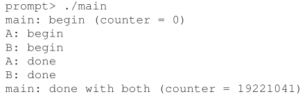

以前在阅读有关于 Python 性能的文章时，总是有人提到「僞线程」和「线程锁」这两个词。由于基础不够，当有人提到 Python 性能时，我也只能学着他们，说「Python 是僞线程啦！不行啦！」之类的话。但是，印在我股子里的装B劲，还是渴望有一天能理解，究竟何爲「锁」？爲何需要「锁」？如何「锁」？以及「GIL的问题」。
何爲锁？

如上面这张图所展示的，在运行多线程 Python 程序时，CPU 内只允许一个线程运行，开始运行其中一个线程时，一定要将「锁」住，不让其它线程运行。当要运行其它线程时，会打开锁，然后再执行第二个线程。如此一来，同一个 CPU 里，只允许一个线程运行。
爲何需要锁？
当然，你也许会想：正常情况下，单核 CPU 也是一次运行一个线程，然后系统中断去执行其它线程，锁的意义何在啊？
的确，系统中断是现代系统的基础，但也因爲它的存在，不得不使用锁。
举个简单明了的例子。
1 | 1 #include <stdio.h> |
上面的这段代码，使用了两个线程操作一个全局变量 counter，每个线程都将它加到 1e7。可以预见，它最后的结果将是 2e7。可是，实际运行下来，并非如此。



三次运行下来，结果完全不同。
这违反了我们的直觉。明明同一段代码，操作同一个变量，爲什麽出来了完全不同的答案？
原因不难解释，我们先来看看 X86 架构下 加法 操作对应的汇编代码。
1 | mov 0xabcde, %eax |
在计算机中，加法操作分成三部分。
- 将被加数放进 寄存器
- 对 寄存器 进行加法
- 将 寄存器 里的数字放到原先被加数的地址
问题也就出在这三部操作这里。抢佔调度发生时，它可不管你在做什麽。很可能就会发生下面的情景。
counter = 6
add 0x1, %eax (此时 %eax 变成了 7，但并没有存到 counter )
CPU 被抢佔
第二个线程做完加法，counter = 7
恢復到第一个线程，将 %eax 的 7 存到 counter
counter = 7
注意，我们 的 counter 两次加 1，却只从 6 变到 7！
正是由于系统中断，使得本应一次完成的事情，分成了两次完成，造成了数据的两次计算。这也是问题的最大根原。
爲此，我们必须考虑：在进行某些操作时，避免因中断（切换上下文 ）导致原子性问题。
如何锁
由于原子性问题是因中断导致的，在不引入新的指令前，最先想到的办法就是：在执行一些重要操作时，干掉中断！比如：
1 | int faker(){ |
在执行 lock 之后，干掉中断，执行完后面的代码之后，再 unlock，打开中断。大略一看，是不错的想法。但别忘了我们最初设计中断的原因。是要避免下面这种情况：
1 | int loop_function(){ |
显然，一旦某个大坏蛋（或者二伍仔）写了上面的代码，除了关机，没任何办法可以夺回 CPU 了。更何况，关掉中断只能关掉当前的处理器，其它的处理器依然会中断，然后搞坏计算结果。关掉中断真是个糟透的想法。
那换个想法，但无限循环这个办法可以用在我们接下来的设计上。(爲了方便，我使用 python 改写教材里的示例，这段代码在 python 中没有多少意义)
1 | class lock_t(): |
上面的代码是定义锁的「锁」、「开锁」功能。现在假设线程 A 在运行，它准备做一个原子操作，同时 mutex 对象是全局对象。那麽，代码可能是这样的。
1 | def do(): |
此时，线程 B 夺得了 CPU 的使用权。它也会执行 lock(mutex)。但它运行到
1 | while (mutex.flag == 1) |
时，因爲 A 已经先执行了，所以 mute.flag 已经是 1 了。在 B 运行期间，因爲 mutex.flag 是 1 的原故，它被困在了 while loop 里。
然后等到 A 夺回 CPU 使用权。A 做完 a = a+1，然后 unlock(mutex)，mutex.flag 变回了 0。此时，假设 B 又夺到了 CPU 使用权。mutex.flag 已经是 0 了，从 while loop 里跳出。。。
就这样，一个简单的锁就完成了。
但，真的一点问题也没有吗？